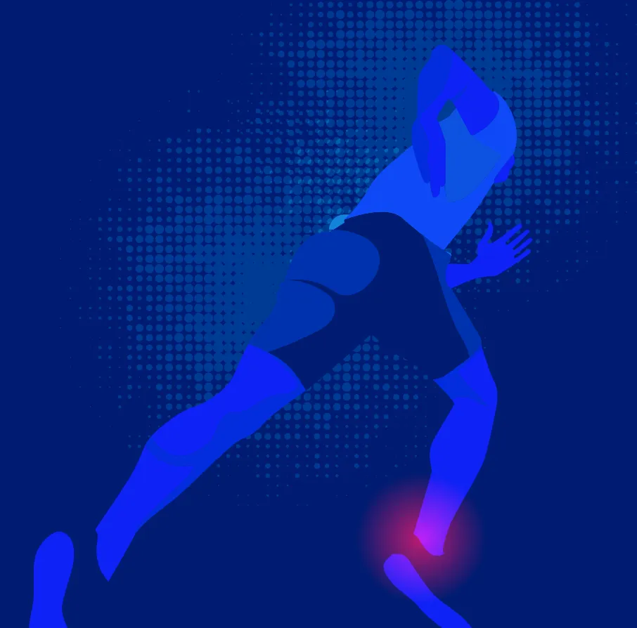

RESUMEN INTERACTIVOEHA2026HEMATOLOGÍA
Blinatumomab en
LLA-B pediátrica
Los resultados del estudio AIEOP-BFM ALL 2017, en un resumen visual con acceso al artículo completo.
La ciencia, en una nueva forma de leer.
Explorá nuestros resúmenes interactivos y artículos completos.
EL CONOCIMIENTO, A UN CLIC
Los resultados del estudio AIEOP-BFM ALL 2017, en un resumen visual con acceso al artículo completo.

RESUMEN INTERACTIVOFIMS2026MEDICINA DEL DEPORTETraumeel y el abordaje integral del esguince lateral de tobillo. Conferencia del Prof. Ludger Gerdesmeyer.
Probá con otro término o explorá todas las especialidades.